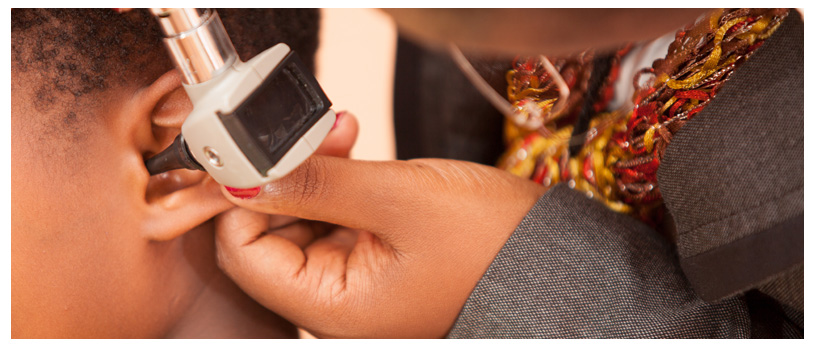
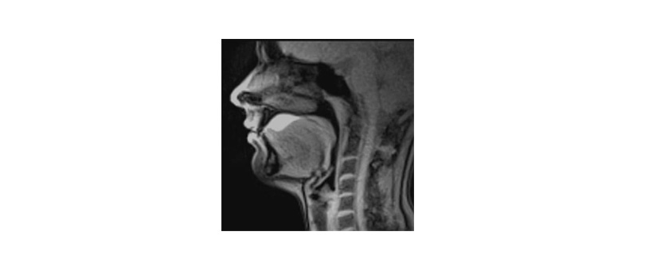
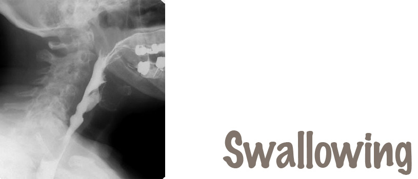

Services
- Hearing and Vestibular Clinic
- Assessment and Diagnostic Services
- Hearing Screening
- Early hearing detention and intervention (EHDI) is conducted on newborns to identify hearing loss early and begin the process of intervention to optimize the child’s development.
- Hearing Testing
- A wide range of procedures are available to facilitate diagnostic hearing testing and accurate diagnosis to be able to determine the nature, type and severity of the hearing problem to be able to institute an appropriate treatment plan which involves use of hearing aid technology.
- Balance Assessment
- Assessment and management of patients with dizziness and vertigo.
- Central Auditory Processing Assessment
- Children with central auditory processing problems affecting learning at school are tested and treatment options offered.
- Tinnitus Assessment
- for patients presenting with “ringing in the ears”, detailed diagnostic evaluation is done to determine the cause of the tinnitus, the nature of the tinnitus, as well as explore treatment options.
- Hearing Screening
- Treatment and management Services
- Hearing Aid Evaluation
- Once a hearing loss has been diagnosed and medical clearance obtained from our ENT Surgeon, our Audiologist conducts hearing aid evaluations where appropriate hearing aids are selected and fitted. This process involves consideration of the type, degree, configuration and symmetry of the hearing loss, with attention also given to the patient’s lifestyle and communication needs to make sure that the appropriate style and technology level is chosen for the patient.
- Hearing Aid Orientation, and Maintenance
- Once hearing aids have been chosen , time is taken to go through comprehensive counseling of the patient on hearing, listening, and communication with the new device. Patients are counseled on the use and care of the hearing aid technology, with follow up tests performed to ensure accurate fitting of the hearing instrument. All follow up with regards hearing instruments are done in close collaboration with the various hearing aid companies we work with.
- Tinnitus Treatment and Management
- various tinnitus treatment and management options are offered with individualized plans developed for individual patients.
- Aural re/habilitation
- Fitting
- Hearing Technology
- With the ever changing digital technology, hearing aid technology is kept up to date and our patients are afforded access to this, with regular follow ups to ensure optimal benefit from what technology has to offer
- Vestibular Rehabilitation Strategies
- Our Vestibular Clinic offers assessment and treatment that includes:
(a) Medical management
(b) Dietary adjustment strategies
(c) Non-Dietary substances Monitoring and management
(d)Adaptation/Habituation strategies
Treatment exercises are changed during the treatment plan by:Grading the level of difficulty by changing from sitting, to standing, to walking positions during vestibular exersizes;
Grading the level of difficulty by changing from vertical to horizontal movements; and
Grading the level of difficulty by altering speed of movements.
Close monitoring of ear function; fullness, tinnitus, hearing level and ear pain is done during treatment.
- Our Vestibular Clinic offers assessment and treatment that includes:
- Hearing Aid Evaluation
- Assessment and Diagnostic Services
- Voice Clinic
- Patients presenting with voice disorders undergo individualized assessment and treatment plans which are evidence-based.
- Communication and Swallowing Clinic
- Patients presenting with speech-language and swallowing problems due to various causes are assessed and treated by our resident Speech Therapist. Speech Therapy can be offered in the various indigenous African languages including English, with swallowing treatment including close liaison with radiology department where video-swallows are done to determine the cause and nature of the swallowing problem.
- Ear Nose and Throat Clinic
- Otology
- This involves treatment of ear diseases including infections as part of our Hearing and Vestibular Clinic.
- Rhinology
- Treatment of conditions affecting the nose including sinusitis and trauma to the nose.
- Laryngology
- Management of disorders and/or diseases and injuries affecting the voice box (larynx) including treatment of laryngitis and other pathologies such as laryngeal polyps, cysts, nodules, laryngeal cancer, etc.
- Pediatric otology and rhinology
- Otology
- Allergy diagnosis and treatment Centre
- Oncology Clinic
- Including the early detection and treatment of nasopharyngeal and laryngeal cancer; and other head and neck cancers.